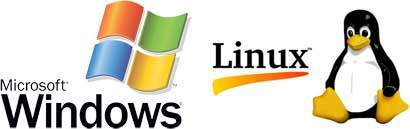

Topic 6: Software & Operating Systems
While hardware consists of the physical parts of a computer, software is the intangible set of instructions and programs that tell the hardware exactly what to do. Without software, a computer is just a useless box of metal and plastic.
Types of Computer Software
Computer software is generally divided into two main categories: System Software and Application Software.

System Software
The foundation layer. It manages the hardware components and basic operations, allowing other programs to run smoothly. It acts as a bridge between the hardware and the user.
Application Software
Programs designed for the end-user to perform specific tasks. Examples include web browsers (Chrome), word processors (Microsoft Word), video games, and photo editors (Photoshop).
The Operating System (OS)
The most important piece of System Software on any computer is the Operating System (OS). The OS handles all the background tasks that keep your computer running.
Key Functions of an OS:
- Resource Management: Decides which application gets to use the CPU and Memory, and for how long.
- Hardware Interface: Translates your clicks and typing into binary signals the hardware can understand.
- File Management: Organizes files into directories and folders so you can easily save and find them.
- Security: Provides password protection and restricts unauthorized access.
Popular Operating Systems
There are several operating systems used worldwide, each with its own unique features and target audience:
- Microsoft Windows: The most widely used OS for personal computers. Known for its ease of use and compatibility with almost all software and games.
- macOS: Created by Apple for Mac computers. Known for its sleek design, stability, and excellent performance in creative tasks like video editing.
- Linux: An open-source operating system. It is highly customizable, very secure, and widely used by programmers, servers, and tech enthusiasts.
- Mobile OS: Smartphones and tablets use specialized operating systems like Android (developed by Google) and iOS (developed by Apple).